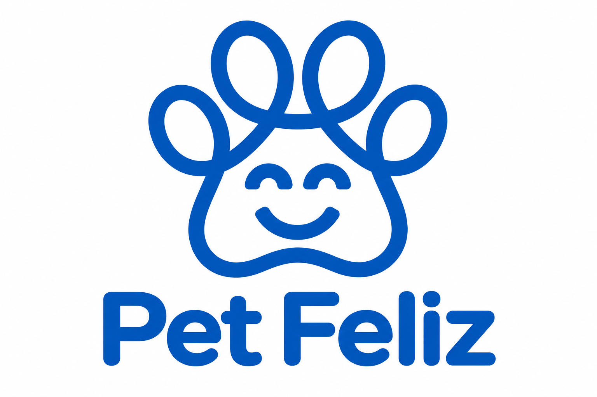
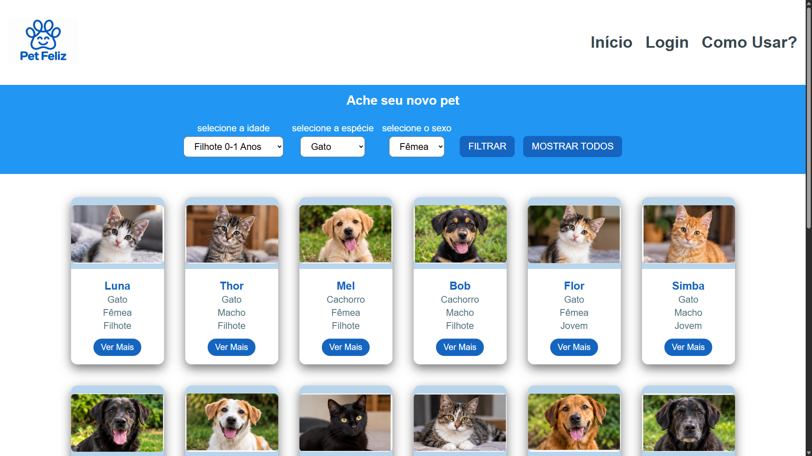
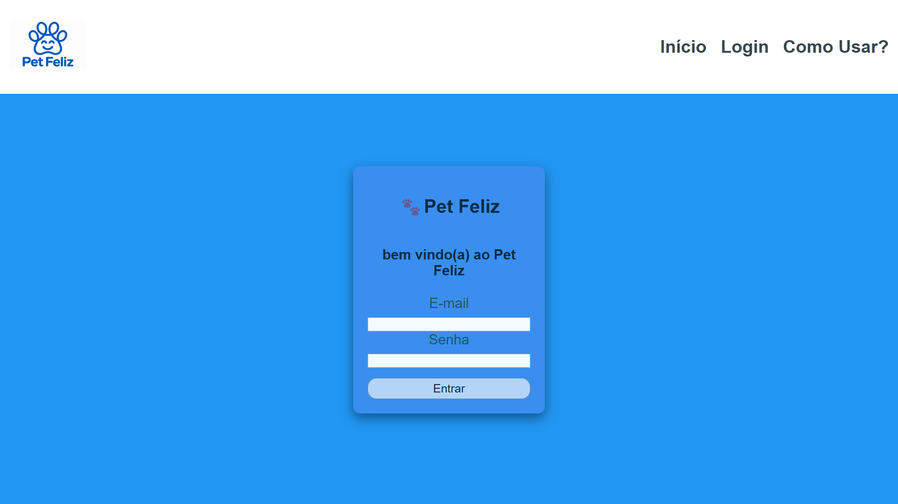
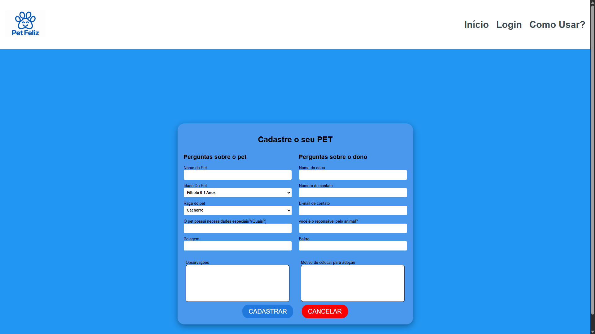

Na página inicial, você pode conhecer os pets disponíveis para adoção e encontrar um que combine com você. Use os filtros para facilitar a busca e clique em "Ver mais" para conhecer melhor cada animal.
Também é possível cadastrar um pet para encontrar um novo lar.

A página de login é responsável por garantir a organização e a segurança do sistema. Somente pessoas que fizeram o login podem realizar o cadastro de novos animais e adotá-los.

Nesta página, você é responsável por disponibilizar o seu pet para adoção. Para concluir o cadastro, é necessário preencher um formulário dividido em duas etapas:
Este projeto foi desenvolvido por dois estudantes do curso Técnico em Informática do Instituto Federal de Educação, Ciência e Tecnologia de Mato Grosso do Sul (IFMS) – Campus Jardim/MS. João Paulo M. de Moraes e Pablo S. Vargas.